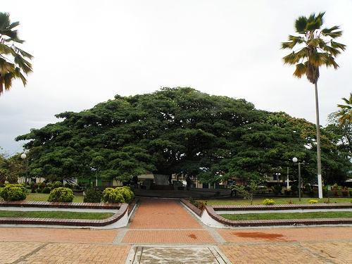
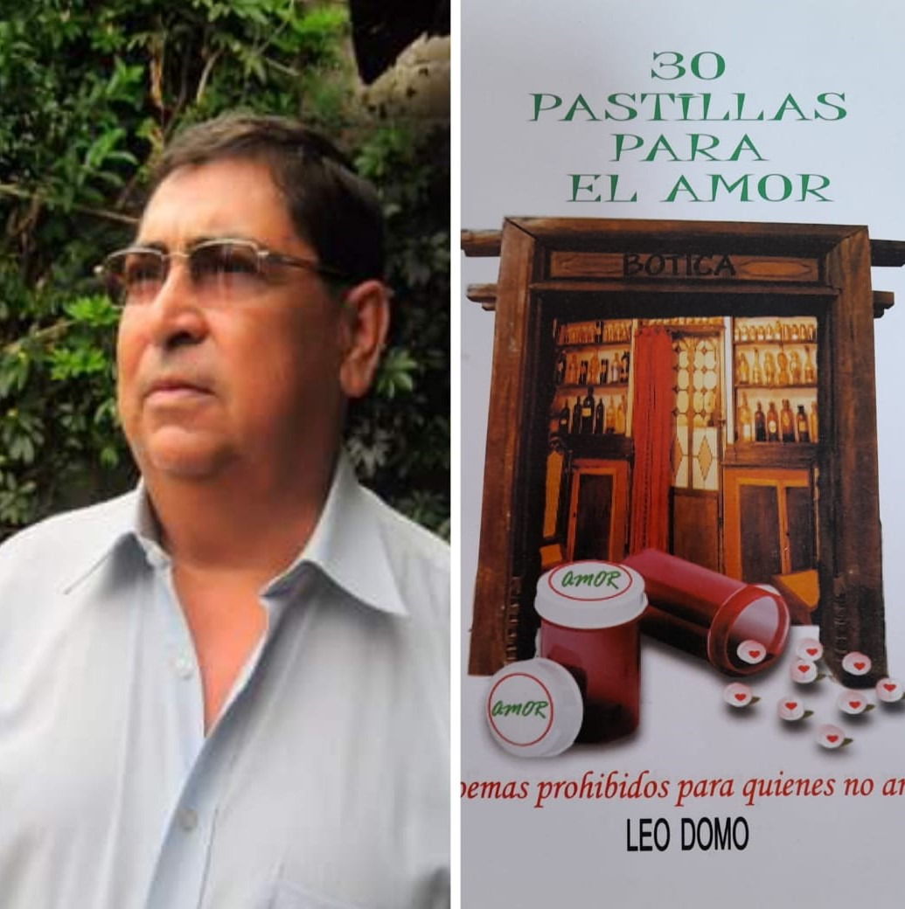
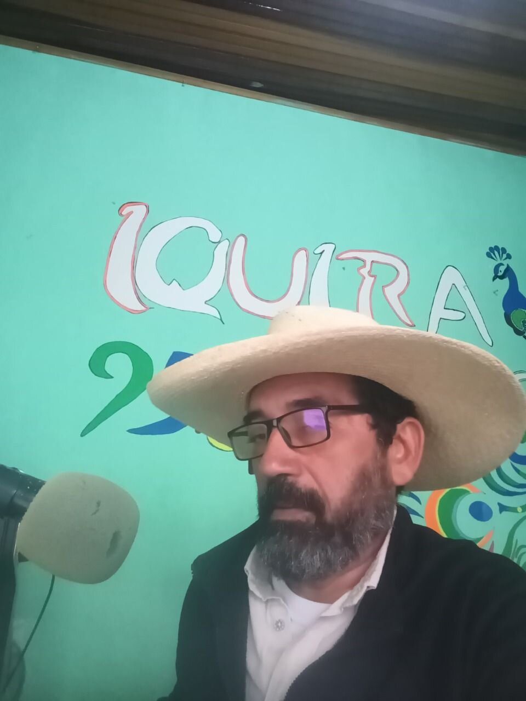
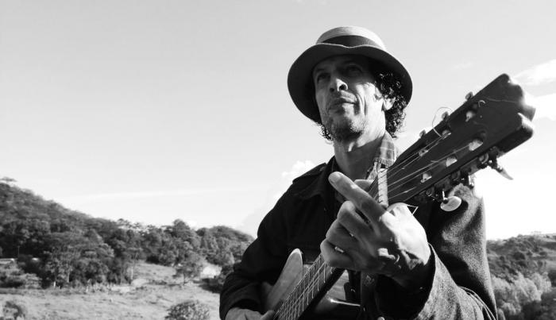

Personajes Destacados

Según proyecciones del DANE (2018) para el año 2022, Íquira cuenta con una población de 9.497 habitantes, de los cuales 2.631 residen en la cabecera municipal y 6.866 en los centros poblados y veredas. El gentilicio es conocido como "iquierño, iquireña, iquireños". Sus habitantes son personas muy amables que hacen del municipio un lugar acogedor. Además, la mayoría de sus habitantes se dedican a la producción agropecuaria, siendo predominantes los cultivos de café, y la ganadería extensiva. Algunos personajes destacados de Íquira son:
- Aquileo Perdomo Ramírez (Profesor Quilo): Nació en Íquira en 1950, su madre fue profesora del Colegio María Auxiliadora y su padre fue asesinado por grupos armados en la época de enfrentamientos entre conservadores y liberales. Es normalista graduado de la Normal Superior de Pitalito, Licenciado en Lingüística y Literatura de la Universidad Surcolombiana y Especialista en Dificultades del Aprendizaje Escolar de la Universidad Cooperativa de Colombia. Ha sido docente en Teruel, Palermo, Suaza y Neiva; también fue maestro en la Institución Educativa María Auxiliadora de Íquira, dejando huella en muchos estudiantes que asistieron a sus clases. Finalmente se pensionó en el año 2015 y actualmente reside en Íquira. Dentro de sus obras destacadas se encuentra el libro "30 Pastillas para el Amor", el cual es una recopilación de poemas escritos por él mismo.

- Alberto Yustres Barrera: Nació en Íquira el 1 de Julio de 1959. Es Ingeniero Agrícola de la Universidad Surcolombiana, graduado en 1988, e Ingeniero Civil de la Universidad Cooperativa de Colombia, graduado en 2001. Fue concejal de Íquira en el período de 1995 a 1997. También, fue alcalde del municipio 3 veces, en los períodos 1990-1992, 2008-2011 y 2016-2019; muchas personas lo reconocen por su labor positiva hacia el municipio en aquellos perídos de mandato. Actualmente labora en la Contraloría General de la República desde el año 2020.
- José Elías González Toro (Ver) : Nació en Íquira en 1959, su padre Angelino González, dedicado a las labores del campo con una finca ganadera y otra cafetera, y su madre María Toro. Por esto, ha sido un hombre de origen campesino y trabajador. Es normalista de la Normal Superior de Pitalito, Licenciado en Educación Básica Primaria y realizó especializaciones en lúdica para la educación. Fue docente en diferentes regiones del Huila y pasó por varias instituciones en la zona rural tanto en Neiva como en otros municipios del departamento; finalmente termina su trayectoria como docente en la Institución Educativa María Auxiliadora de Íquira, en la que laboró por 19 años. Por otro lado, la radio y los medios de comunicación han sido su otra vocación, hasta que el 1997, gracias a una convocatoria del Ministerio, funda la Emisora Iquira Stereo, siendo la única y principal emisora del municipio. Además, se dedica a su labor como líder de Asomeco, que es la asociación de medios comunitarios en el Huila, y a la vez es el secretario de la Federación de Medios de Comunicación Comunitaria de Colombia, Fedemedios.

- José Alfredo Cedeño Trujillo (Ver) : Nació en Íquira en 1969, en una familia campesina del municipio. Es compositor y cantante, quien comenzó su carrera a los 10 años cuando cantaba en diferentes eventos del colegio. Seis años más tarde, compuso una canción que hoy en día sigue siendo muy escuchada: ‘Quiero ser feliz’, grabada con la orquesta La Cheverísima en 1989. Tanto es el éxito de esta canción que ha sido grabada por más de 80 agrupaciones de todo el mundo. Por otro lado, el maestro Cedeño ha cantado con varias agrupaciones huilenses, con las que ha tenidos éxitos como ‘Entre dos fuegos’ del grupo Bache, ‘Te amaré’, con la orquesta la Séptima Dimensión, entre otras. Actualmente, desempeña una labor social en el centro poblado Valencia de la Paz, centro poblado de Íquira, en la que da clases a niños, niñas y adolescentes que estén interesados en incursionar en el mundo de la música.
